1.9. 朴素贝叶斯¶
朴素贝叶斯方法是一系列有监督学习的方法，这些方法基于对贝叶斯理论的应用，即简单(naive)的假设
每对特征之间都相互独立。给定类变量  (这里一个样本仅属于一类)
和一个相互独立的特征向量
(这里一个样本仅属于一类)
和一个相互独立的特征向量  到
到  ，贝叶斯定理可得到如下关系：
，贝叶斯定理可得到如下关系：
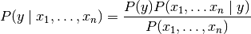
使用简单(naive)的假设-每对特征之间都相互独立：
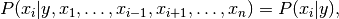
对于所有  ，这个关系式可以化简为：
，这个关系式可以化简为：
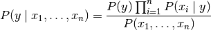
因为 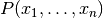 是输入时给定的常数(特征不可动态改变)， 我们可使用如下分类规则：
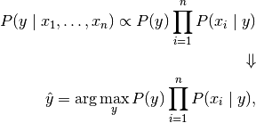
我们可使用最大后验概率 (MAP) 估计来估计变量
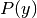 和 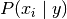；
前者是 在训练集中的相对频率。
各种各样的朴素贝叶斯分类器的不同之处在于，他们对 的分布的认识和假设不同。
尽管它们看起来有一个过于简单的假设，朴素贝叶斯分类器仍然 在真实世界的许多情景下工作良好，在文本分类和垃圾邮件筛选领域尤其流行。 它们要求少量的数据来估计必要的参数。 (关于理论上朴素贝叶斯为什么会工作良好，以及它可以适用的数据类型，详见下方References)
朴素贝叶斯学习和分类器与其他相比可以非常快。类条件特征分布的解耦意味着 每个分布可以独立估计为一个一维分布，这反过来又有助于缓解维灾难问题。
另一方面，虽然被称为一个合适的分类器，它也被认为是是一个坏的估计量，所以对 predict_proba 的概率输出不应太过依赖。
References:
- H. Zhang (2004). The optimality of Naive Bayes. Proc. FLAIRS.
1.9.1. 朴素贝叶斯 高斯模型¶
GaussianNB 实现了朴素贝叶斯的高斯模型( Gaussian Naive Bayes )的分类算法。
译者按:
- 有些特征可能是连续型变量，比如说人的身高，物体的长度，这些特征可以转换成离散型的值，比如如果身高在160cm以下，特征值为1；在160cm和170cm之间，特征值为2；在170cm之上，特征值为3。也可以这样转换，将身高转换为3个特征，分别是f1、f2、f3，如果身高是160cm以下，这三个特征的值分别是1、0、0，若身高在170cm之上，这三个特征的值分别是0、0、1。不过这些方式都不够细腻，高斯模型可以解决这个问题。
高斯模型假设这些一个特征的所有属于某个类别的观测值符合高斯分布:
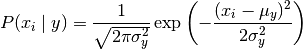
参数是 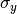 和 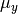 ， 估计时采用极大似然法。
>>> from sklearn import datasets
>>> iris = datasets.load_iris()
>>> from sklearn.naive_bayes import GaussianNB
>>> gnb = GaussianNB()
>>> y_pred = gnb.fit(iris.data, iris.target).predict(iris.data)
>>> print("Number of mislabeled points out of a total %d points : %d"
... % (iris.data.shape[0],(iris.target != y_pred).sum()))
Number of mislabeled points out of a total 150 points : 6
1.9.2. 朴素贝叶斯 多项式模型¶
MultinomialNB 实现了数据服从多项式分布时的贝叶斯算法，它也是文本分类领域的
两种典型算法之一(这里数据通常以词向量的形式表示，tf-idf向量在这里也表现的很好)。
这个分布被参数化成向量：
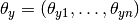
对于每一个类别 , 参数  表示特征数量(文本分类中表示词向量的大小)
表示特征数量(文本分类中表示词向量的大小)
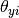 表示有 的概率对于特征 在一个样本中的被类 所拥有。
参数 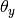 被平滑的极大似然估计法所估计，也就是说，相关频率计算：
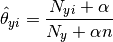
这里 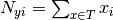 是特征 在训练集  中，在一个属于 类的样本中出现的次数，
而 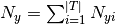 是在类 中所有的特征的数量和。
中，在一个属于 类的样本中出现的次数，
而 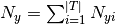 是在类 中所有的特征的数量和。
平滑先验  可引入不在训练样本中的特征，同时防止0概率在未来的计算中出现。
如果
可引入不在训练样本中的特征，同时防止0概率在未来的计算中出现。
如果  ，称为拉普拉斯平滑(Laplace smoothing)，
而当设置 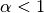 时，则称为Lidstone smoothing。
，称为拉普拉斯平滑(Laplace smoothing)，
而当设置 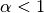 时，则称为Lidstone smoothing。
1.9.3. 朴素贝叶斯 伯努利模型¶
类 BernoulliNB 实现了对于服从多元伯努利分布的数据的朴素贝叶斯训练和分类算法；
也就是说，对于大量特征，每一个特征都是一个0-1变量 (Bernoulli, boolean)。
因此，这个类要求样本集合以0-1特征向量的方式展现。如果接收到了其他类型的数据作为参数，
一个 BernoulliNB 实例会把输入数据二元化(取决于 binarize 参数设置)
朴素贝叶斯的伯努利模型是基于以下公式：
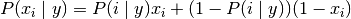
与多项式模型的伯努利分布不同的是，伯努利模型明确地指出，未被使用的特征 是
作为惩罚项的 的一个的计数器，
而多项式模型简单的忽略了这个特征。
在文本分类的情境中，被用来训练和使用这一分类器的是词语同现向量 (word occurrence vectors) 而不是词频向量 (word
count vectors)。 BernoulliNB 可能尤其会在小数据集时表现良好。如果时间允许，推荐试用以上所有模型进行评价。
References:
- C.D. Manning, P. Raghavan and H. Schütze (2008). Introduction to Information Retrieval. Cambridge University Press, pp. 234-265.
- A. McCallum and K. Nigam (1998). A comparison of event models for Naive Bayes text classification. Proc. AAAI/ICML-98 Workshop on Learning for Text Categorization, pp. 41-48.
- V. Metsis, I. Androutsopoulos and G. Paliouras (2006). Spam filtering with Naive Bayes – Which Naive Bayes? 3rd Conf. on Email and Anti-Spam (CEAS).
1.9.4. 基于外存(Out-of-core)的朴素贝叶斯模型拟合¶
朴素贝叶斯模型可以用来解决大规模的分类问题，
其完整的训练集可能不适合放在内存中。为解决这个问题，
MultinomialNB ， BernoulliNB ， 和 GaussianNB
实现了 partial_fit 方法，可以动态的增加数据来使用(即所谓online classifier)。与其他分类器相结合的例子见
Out-of-core classification of text documents 。 所有离散的分类器(前两者)
均支持样本权重， GaussianNB 不支持.
与 fit 方法相反， 首次调用 partial_fit 需要传入所有可能的样本标签的list
对于scikit-learn中所有可用方案，请参考 out-of-core learning 文档.
Note
贝叶斯模型中的 partial_fit 方法引入了一些额外开销。因此建议使用的数据块尽可能大，即达到可用RAM的允许范围。